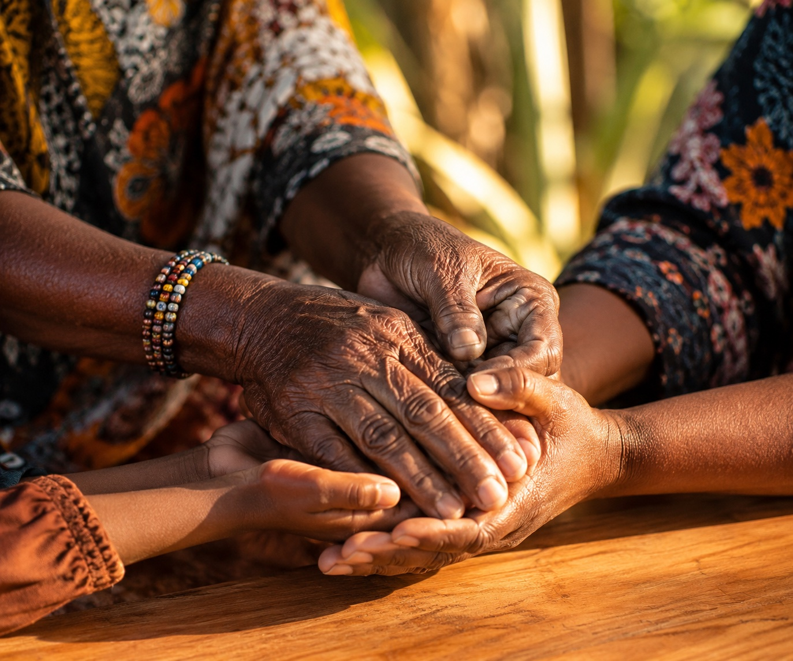
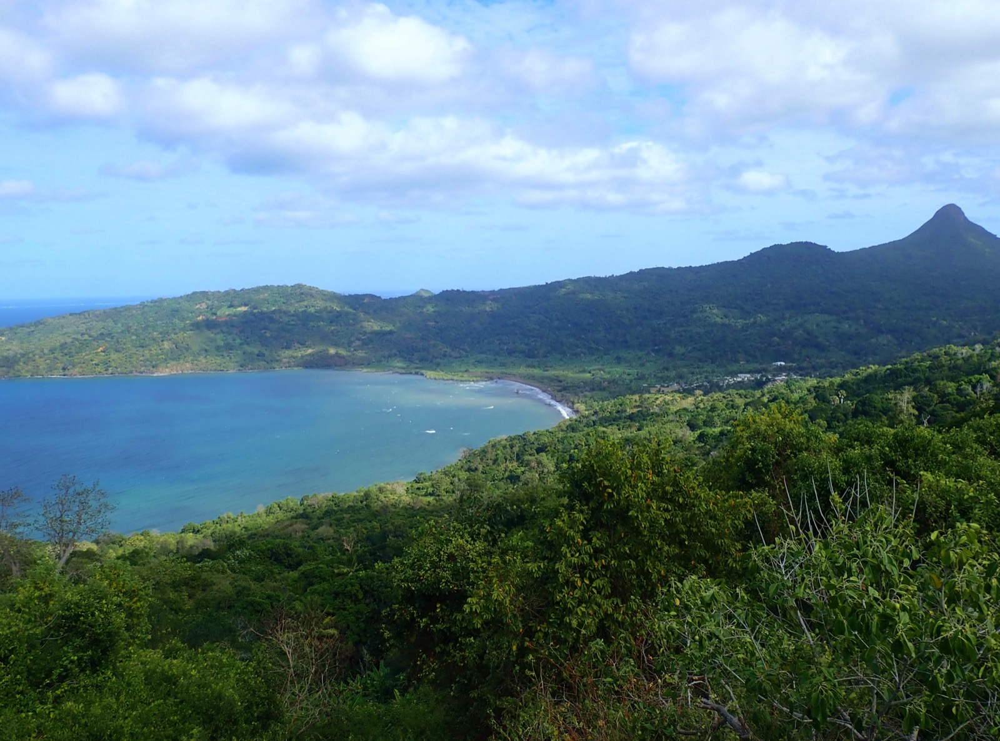

Notre identité
À propos du Centre Intercommunal d'Action Sociale
Porté par la CCSUD, le CIAS conduit une politique sociale ambitieuse au service des quatre communes du Sud de Mayotte.
Découvrir la gouvernanceNotre mission
Un acteur clé de la solidarité
La Communauté de Communes du Sud de Mayotte a choisi d'exercer la compétence « action sociale d'intérêt communautaire » et en a confié la mise en œuvre à son Centre Intercommunal d'Action Sociale (CIAS).
Établissement public administratif, le CIAS dispose d'une personnalité morale de droit public, lui garantissant une autonomie administrative et financière vis-à-vis des communes membres.
Son organisation et son fonctionnement sont encadrés par les dispositions du Code de l'Action Sociale et des Familles.
Nos actions
5 axes d'intervention
Le CIAS intervient sur cinq domaines essentiels pour répondre aux besoins des habitants du Sud de Mayotte.
Accès aux droits
Accompagnement juridique, Maisons du droit et de la justice.
Santé
Maison de santé pluridisciplinaire, accès aux soins de proximité.
Insertion
Ateliers, chantiers d'insertion, programme Mobil'Sud.
Logement
Habitat décent, hébergement d'urgence, accompagnement.
Jeunesse
Culture, sports, bourses, aides financières aux jeunes.
Nos valeurs fondatrices
Ce qui nous guide au quotidien
-
1Solidarité
Tisser des liens durables entre habitants et communes pour un territoire soudé.
-
2Équité
Garantir l'accès égal aux droits et services sociaux, sans distinction.
-
3Dignité et Proximité
Agir au plus près des personnes vulnérables avec respect et humanité.

Le territoire
4 communes, un seul CIAS
Le CIAS couvre l'ensemble du territoire du Sud de Mayotte, réunissant quatre communes autour d'un projet social commun.

SiègeBandrélé
Siège du CIAS - 43 rue Mkoumafejou. Commune côtière du sud-est, porte d'entrée vers les plages et lagons préservés de Mayotte.
Chirongui
Commune du centre-sud, au coeur des collines mahoraises. Centre névralgique pour les démarches sociales de l'intérieur du territoire.
Kani-Kéli
Commune du sud-ouest, face au lagon. Territoire de solidarité où le CIAS accompagne les familles dans leurs démarches quotidiennes.
Bouéni
Commune la plus au sud de Mayotte, connue pour sa baie exceptionnelle. Le CIAS y assure une présence sociale de proximité.